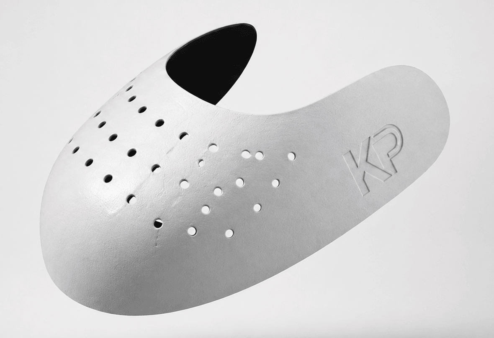
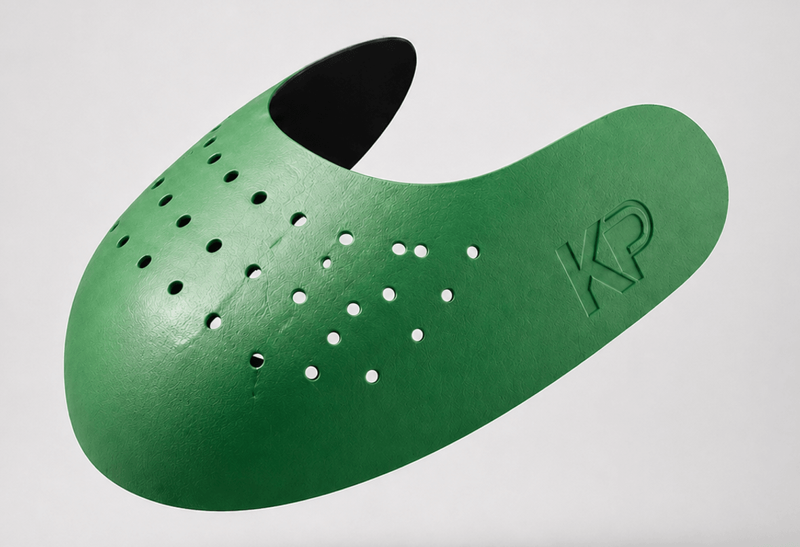
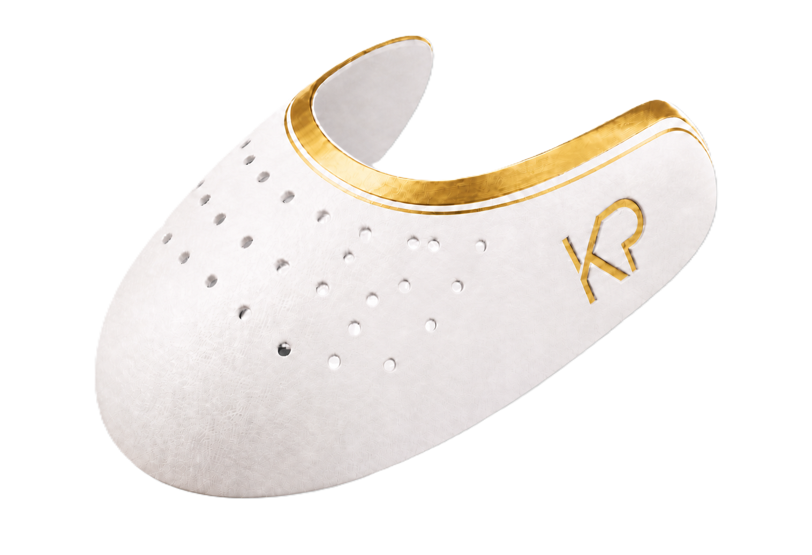
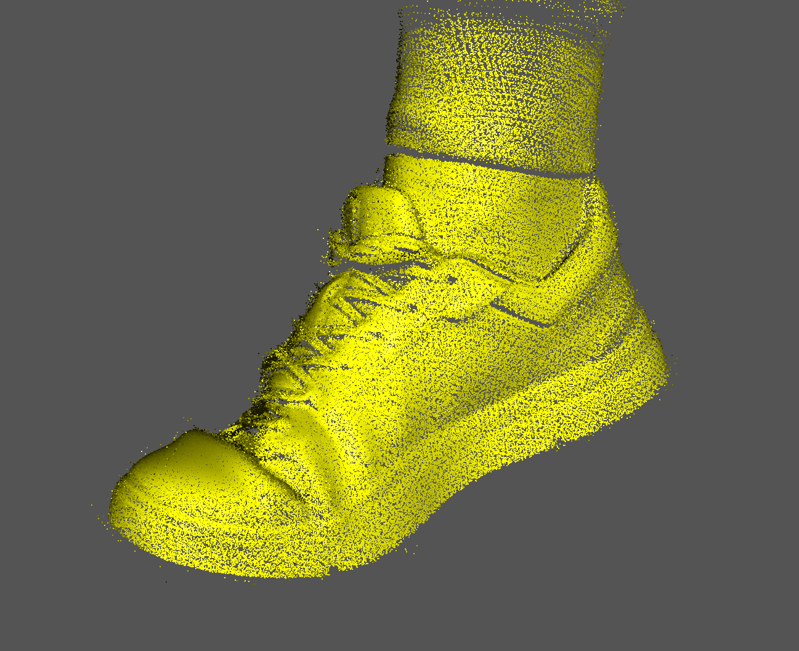
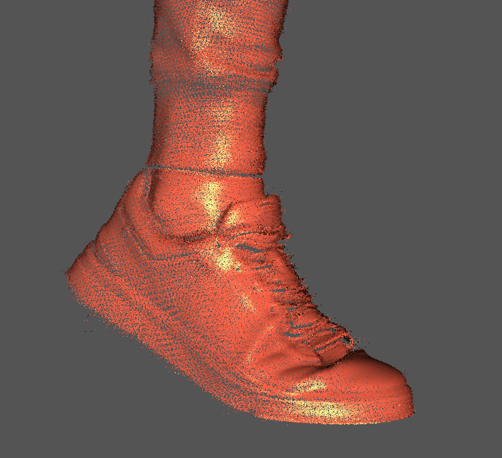
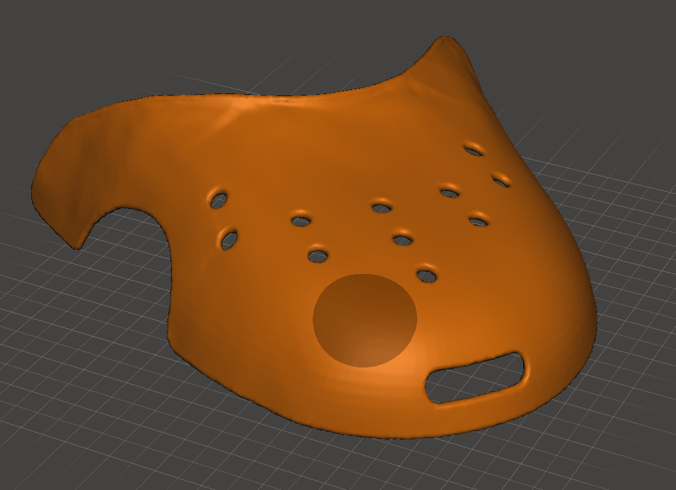

Forma-megőrzés
Kevesebb gyűrődés és deformáció a sneaker orr-részén
KickProtect TPU sneaker shield
Rugalmas, esztétikus és kényelmesebb megoldás a toe box védelmére, hogy a kedvenc cipőd tovább tartsa a formáját, megjelenését és értékét.

Kevesebb gyűrődés és deformáció a sneaker orr-részén
Hajlik, visszanyeri formáját, és napi használatra készült
Vékony kialakítás, amely nem borítja fel a sneaker sziluettjét
A probléma
A sneaker orr-része használat közben könnyen gyűrődik, deformálódik, és elveszíti az eredeti formáját. Ez különösen azoknak zavaró, akik figyelnek a cipőik állapotára, megjelenésére és értékére.
A toe box a járás természetes hajlításától kapja a legnagyobb terhelést.
A KickProtect a cipő orr-részébe kerül, és segít megtartani az eredeti ívet.
TPU anyag, szellőző perforáció és több méret a kényelmesebb mindennapi viselethez.
Csomagok és árak
Basic, Comfort és Premium Gold csomagok különböző sneaker-használathoz. Mindegyik pár ergonomikus, ívelt formával készül bal és jobb oldali cipőhöz.
Rugalmas TPU alapvédelem szellőző perforációval a legtöbb hétköznapi sneakerhez.

Puha belső érzet, mosható kialakítás és rugalmas forma-megtartás napi használathoz.

Erősebb vizuális karakter, KP branding és prémium színvilág gyűjtői sneakerekhez.
Engineering workflow
A KickProtect fejlesztése valós cipőgeometriából indul: először pontfelhő készül, majd a nyers scanadatból tisztított modell és tesztelhető TPU shield forma lesz.

A cipő és láb térbeli adataiból indul a toe box geometriájának feltérképezése.

A nyers scanből használható felület születik, ami pontosabb illeszkedési alapot ad.

A scanadat alapján készül a perforált, hajlított, prototípusra vihető TPU forma.
Vízió és küldetés
Olyan sneaker kiegészítő márkát építünk, amely segít hosszabb ideig megőrizni a cipők formáját, megjelenését és értékét modern anyaghasználattal és prémium megjelenéssel.
Kapcsolat
Írj nekünk, és segítünk megtalálni a megfelelő KickProtect párt a sneakeredhez.